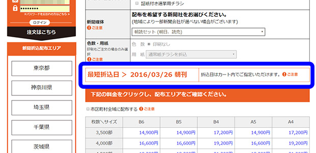
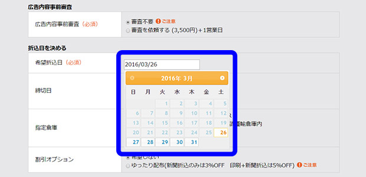

サポートQ＆A
会員登録に関するQ&A
会員登録せずに注文は出来ますか？
- オリコメイトでのご注文の際は必ず会員登録（無料）が必要となります。
マイページとは何ですか？
-
「マイページ」とは、会員様専用ページのことです。
トップページ右上の「マイページ」ボタンより
・「購入履歴の確認」
・「イメージ原稿の入稿」
・「印刷原稿の入稿」
・「注文商品の進捗状況確認」
・「見積書、ご請求書、領収書のダウンロード」
・「配布明細のダウンロード」
・「会員情報の変更」
・「退会の手続き」
が利用できます。
パスワードを忘れました。
- トップページの右上の「マイページ」内より、再設定の手続きが行えます。こちら
フォームにお客様の氏名とご登録メールアドレスを入力してください。
パスワードの再設定画面のURLが記載されたメールに送信されます。記載されたURLにアクセスし、パスワードの再設定を行ってください。
登録してある住所を変更したい。
- マイページの「会員登録内容変更」より変更が行えます。
ログインできません。
-
会員登録時のメールアドレス、もしくはパスワードと違う可能性があります。もう一度ご確認ください。
それでもログインできない場合は、お手数ですが、再度会員登録をしていただくか、パスワードの再設定をしてください。再設定のページはこちら
またサイト運営上の安全管理のため、１年間以上未使用のアカウントをお客様に事前の告知をすることなく、会員データを消去させていただきます。ご注意ください。
自動メールが届きません。
-
会員登録時、ご注文確定時などの確認メールは、システムより自動的に送信されます。
ご登録いただいたメールアドレスに間違いががないかご確認ください。
１２時間以上たってもメールが届かない場合は、お手数ですが、当社までお電話でご連絡ください。
「注文番号」とは何ですか？
-
ご注文商品一件ごとに当社より発行される番号です。
データの管理、進捗のご確認やお問い合わせの時など必要となりますので、大切に管理をお願いいたします。
注文番号」は「ご注文確認メール」に掲載をしております。またマイページからでもご確認いただけます。
退会したい。
-
マイページの「退会の手続き」よりお手続きができます。
一度退会されますと、登録情報やご注文履歴などすべての情報が削除されます。あらかじめご了承ください。
お見積りに関するQ&A
フリーペーパーにも折込できますか？
- オリコメイトでは、新聞の折込チラシを扱っており、「折込」とは新聞折込のことを示します。
どんなチラシでも新聞折込できるのですか？
- 折込広告基準に準じていることが前提となります。(折込広告基準についてはこちら)
また、チラシの材質や形状によっても料金が異なり、折込機械（丁合機）に通らないなどの理由により折込できない場合もございます。
「商品とプラン」に無い形状や材質の場合は、一度お電話にてお問合せください。別途、お見積りさせていただきます。
実際に会って打ち合わせしたいので、営業に来てもらうことはできますか？
- 基本的にお客様とのお打合せはメールやお電話等の通信のみとさせていただいておりますが、ご来社いただいての打ち合わせは可能です。お問い合わせください。
見積もり、資料請求、問い合わせには料金は発生しますか？
- 当社では、お見積り・資料請求・お問い合わせは無料です。
広告内容に関するQ&A
他社で断られたチラシでも折込できますか？
-
折込広告基準に準じていることが条件となります。(折込広告基準についてはこちら)
広告基準に抵触していることが原因で他社で折込を断られた場合は、紙面上の表現を改善することで折込は可能となります。
新聞折込可能の可否は誰が決めるの？
- 最終的な折込実施の可否は、現地新聞販売店が決定できることとなっております。
まれな事例ですが、折込広告基準に準じてるチラシでも過去に読者から多数のクレームが発生したことのあるチラシや、地域紛争の原因となりうる政治、宗教、思想を説いた内容の広告はお断りさせていただく場合がございます。
折込広告基準とは何ですか？
- 新聞折込広告のもつ社会的影響を鑑み各地の新聞折込業界（新聞販売店等）が設けたガイドラインです。詳しくはこちらを参照ください。
折込できるか事前に審査してもらえますか？
- はい。可能です。
配布エリア決定後の「ご注文内容の入力」画面にて「広告内容事前審査」をお申込みいただけます。
広告審査に通過した場合のみ、次の作業工程に移行致します。
もし、審査の結果”折込不可”となった場合は、紙面の内容を改善いただくか、キャンセルとなります。
新聞折込に関するQ&A
本日注文したら、いつ折込されますか？
-
本日ご注文いただいた場合の最短折込日は、料金表画面にてご確認いただけます。
 最短折込日以降の日付であれば、お客様ご希望の折込日をご指定いただけます。
折込日のご指定は「ご注文内容の入力」画面にてご指定ください。
※新聞休刊日や折込不可日は選択ができません。
 ご注文後、お支払やご入稿など、お客様にご用意いただくものすべてを締切日までにご用意いただいて、はじめて”折込日確定”となります。
折込日はいつ確定しますか？
-
”お客様にご用意いただくもの”すべてが揃った時点で折込日確定となります。
”お客様にご用意いただくもの”は、ご注文プランにより異なります。
■新聞折込のみプラン
「ネットからのご注文」、「お支払」、「イメージ入稿」、「チラシ納入」の4点すべてが確認できた時点で「ご注文確定（折込日確定）」となります。
■印刷+新聞折込プラン
「ネットからのご注文」、「お支払」、「印刷データ入稿」の3点すべてが確認でき、且つ、印刷データに不備が無かった場合、「ご注文確定（折込日確定）」となります。
※ご注文時やご注文確認メールに記載の締切日までにすべてが確認できた場合、お客様ご指定の折込日へ折込実施となります。
ゆったり配布とは何ですか？
-
ご希望の折込日を初日とする3日間以内に折込を完了する割引サービスです。
例えば、希望折込日が6月6日だった場合、6日、7日、8日の3日間で折込を完了致します。
3日間分割して配布する場合や1日で折込を完了する場合もありますが、それらスケジュールの指定はできません。
また、3日間は「新聞休刊日や折込不可日は含まない3日間」となります。
上の例の内、6月7日が新聞休刊日だった場合は、6月6日、8日、9日の3日間で折込を完了致します。
注文や支払い等の締切はいつですか？
-
折込日から逆算した各種締切は、「締切スケジュール」よりご確認いただけます。
商品、プラン、折込日を選択して、各締切日をご確認ください。
尚、ご注文締切日は「お支払い締切日」と同じ日となります。
お支払締切日が銀行休業日ですが。
-
お支払いが土日・祝日や平日15時以降になってしまう場合は、メールまたはFAXにてお振込明細やお振込予約明細をご提出ください。
締切日までにご提出いただくことで、お支払確認とさせていただきます。
必ず「ご注文番号」をメールまたはＦＡＸに記入してください。
ご提出用メールアドレス：huri@orikomate.jp
ご提出用ＦＡＸ番号：045-971-7654
※他のメールアドレスへお送りいただいても確認ができない場合がございますのでご注意ください。
配布したい市区町村が見当たりません。
チラシの印刷は他社へ依頼し、新聞折込だけを注文したいのですが。
-
はい。ご注文いただけます。
「商品とプラン」選択で「新聞折込のみ」を選択下さい。
デザイン制作も注文したいのですが。
-
別途、お見積りとなりますので、お電話にてお問い合わせください。
デザイン制作の料金は、そのボリュームにより異なります。
所要日数は、
デザイン：10日～20日程度
印刷：7日～10日程度
となりますので、折込予定日の20日～30日前までにデザイン制作のご依頼をお願い致します。
最低何枚から注文できますか？
-
配布を希望される市区と選択された新聞媒体の組み合わせにより、最低ご注文枚数は異なります。
発行部数の少ない新聞であれば、最低1,000枚～ご注文が可能となりますが、発行部数の多い新聞を選択された場合は、半径0.5km相当の枚数が最低ご注文枚数となります。
「もっと少ない枚数で注文したい」という場合は、「新聞媒体」欄で発行部数の少ない産経新聞などを選択してみてください。
尚、最大ご注文枚数は～20万枚までご注文いただけます。
輪転サイズやタブロイドサイズにも対応していますか？
-
はい。可能です。
「印刷+新聞折込」プランをご希望の場合は、別途お見積りとなりますので、お電話またはお問合せフォームよりお問合せ下さい。
「新聞折込のみ」プランをご希望の場合は、下記要領でお申込みください。
※Ｄ４サイズ＝Ｂ４からご注文ください。
※Ｂ４フチ有りサイズ＝Ｂ４からご注文下さい。
Ａ３サイズが無いのですが．．．。
- Ａ３サイズは二ツ折り（仕上がりＡ４サイズ）されていないと折り込みできませんので、「二ツ折チラシ」を選択の上、ご注文ください。
種別確認とは何ですか？
-
主に、新聞折込の料金が変わる条件です。
新聞折込はサイズや枚数だけでなく、紙の厚さや紙面の内容によっても料金が変わる地域がございます。
ペラチラシとは何ですか？
-
ペラチラシとは、俗に”ペライチ”とも呼ばれる一枚もののチラシです。
今後、いろいろな形状の商品を追加してまいります。
二ツ折りチラシを新聞折込したいのですが、二ツ折り加工はおこなってますか？
-
「二ツ折チラシ」＞「印刷+新聞折込」のご注文料金には二ツ折り加工料金が含まれております。
「二ツ折チラシ」＞「新聞折込のみ」のご注文料金には二ツ折り加工料金は含まれておらず、お客様にて折り加工を施して頂く必要がございます。
リストに無い新聞に折込したいのですが。
-
申し訳ございませんが、新聞媒体欄のリストにない新聞社への折込は承っておりません。
リストにない組み合わせで新聞折込をご希望の場合は、お電話またはお問合せフォームよりお問い合わせください。別途、お見積りさせていただきます。
１色や2色で印刷をしたいのですが。
-
申し訳ございませんが、両面フルカラー印刷機を使用している都合上、1色や2色の場合でも、4色をご指定下さい。
実際にご入稿いただいた原稿が1色や2色だった場合、4色掛け合わせでの1色や2色表現になる場合がございます。
リストに無い用紙で印刷したいのですが。
- 用紙選択のリストにない用紙で印刷をご希望の場合は、お電話またはお問合せフォームよりお問い合わせください。別途、お見積りさせていただきます。
紙の質感を知りたいので、用紙のサンプルが欲しいのですが。
- 用紙サンプルをお送りさせて頂きますので、お問合せフォームにご住所をご記入いただき、「資料請求」にチェックの上、資料請求をお願い致します。
新聞折込のみの注文です。チラシはどこへ納品したらよいですか？
-
ご注文の新聞折込を実施する”都県市区”によりチラシを納入いただく当社指定倉庫は異なります。
「ご注文内容の入力」画面に表示された指定倉庫へチラシを納入ください。
※併せてチラシ納入先倉庫も参照ください。
※ご注文前のチラシ納入はご遠慮ください。必ずご注文をいただいた後に納入をお願い致します。
締切を過ぎてしまいました。
-
全ての締切日時には多少の猶予を含んでおりますので、なるべくお早目にご提出をお願い致します。
ご希望の折込日へ間に合うよう、努力させていただきます。
物理的にどうしてもご希望折込日への折込実施が間に合わない場合は順延とさせていただきます。
”お客様にご用意いただくもの”すべてが確認できた時点で、「ご注文確定（折込日確定）」のメールをお送りしておりますので確定折込日はそちらをご確認ください。
配布エリアに関するＱ＆Ａ
市区全域に配布はできますか？
-
はい。可能です。
料金表の少し上にある「□市区町村全域に配布する」にチェックをいれてご注文ください。
店舗を中心とした狭い範囲に配布したいのですが、配布エリアは絞れますか？
- はい。店舗を中心とした配布が可能です。 料金表画面で金額を選択した後、配布エリアを指定する地図画面に移行しますので、店舗の住所を入力いただき中心地点と配布エリアをご確認ください。 通常は中心点から外側に向かって配布エリアを割り当てていきますが、中心点以外にも配布を重視したい住所がある場合は、重点ポイント設定画面で青色マーカーを設置してください。
もっと狭い範囲へ折込をしたいのですが。
- より多くの新聞を選択いただくか、ご注文枚数を減らしてみてください。
もっと広い範囲へ折込をしたいのですが。
- 新聞の組み合わせを減らすか、ご注文枚数を増やしてみてください。
配布エリアの確認はできますか？
-
はい、可能です。
「マイページ」＞「広告タイトル」＞「配布エリア地図」よりご確認いただけます。
尚、当サイトで提供される地図データを閲覧される際は、いつもＮＡＶＩの地図閲覧規約に承諾したものとみなします。
参照：いつもＮＡＶＩ地図閲覧規約
納品書、請求書は発行できますか？
- はい、可能です。ご注文後、当店の「お問い合わせ」ページよりご連絡ください。

 オリコメイトは、2012年に神奈川県の経営改革計画で、初めてのMAP連動型ECサイトとして承認取得しました。
オリコメイトは、2012年に神奈川県の経営改革計画で、初めてのMAP連動型ECサイトとして承認取得しました。